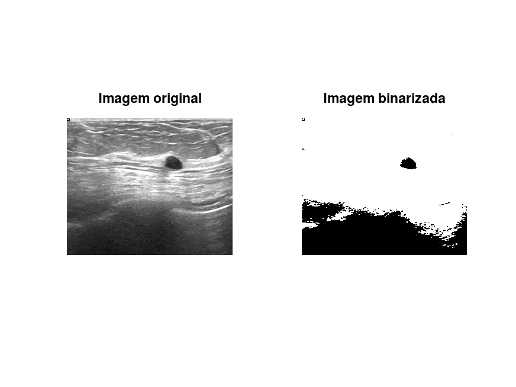
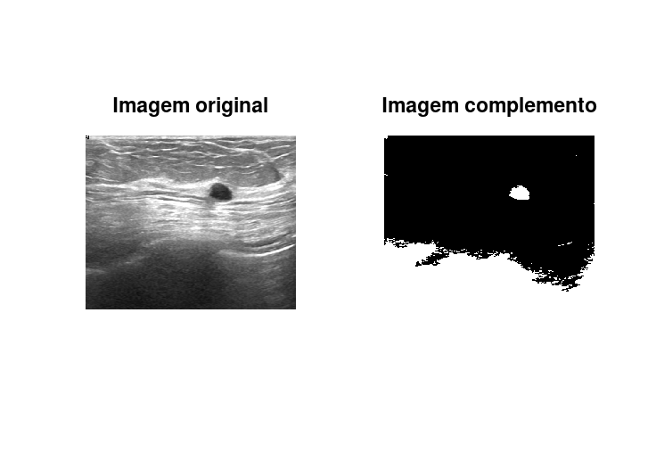
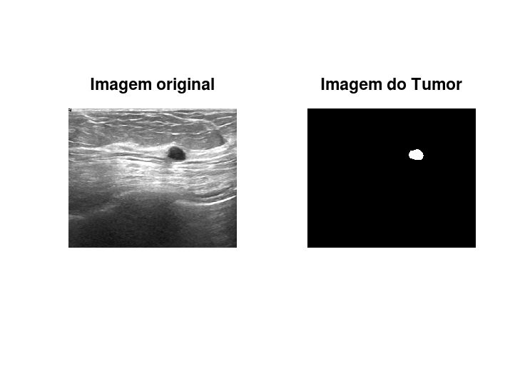

Autor: Marlon da Silva Rogério
GONZALEZ, R. C., WOODS, R. E. Processamento de Imagens Digitais. Editora Edgard Blucher, ISBN São Paulo, 2000. Support MathWorks, 2021. Disponível em: https://www.mathworks.com/help/. Acesso em: 18 de julho. de 2021.
%Definir um conjunto de imagens %Tumor em images de ultrasonografia de mama OU outras imagens. %Segmente nas 3 images o tumor (bening) OU outra região. %Visualizar, comparar (com a �resposta fornecida* mask) e �comentar close all; clear; clc; ##img = im2double(imread('tumor1.png')); ##img = im2double(imread('tumor2.png')); img = im2double(imread('tumor3.png')); % com mathlab usar imbinarize binarizada = im2bw(img, 0.3); complemento = imcomplement(bwareaopen(binarizada, 2000)); bordas = imclearborder(complemento,8); tumor = imopen(bordas, strel("disk", 10, 0)); figure; subplot(1,2,1) imshow(img); title("Imagem original"); subplot(1,2,2) imshow(binarizada, []); title("Imagem binarizada"); figure; subplot(1,2,1) imshow(img); title("Imagem original"); subplot(1,2,2) imshow(complemento, []); title("Imagem complemento"); figure; subplot(1,2,1) imshow(img); title("Imagem original"); subplot(1,2,2) imshow(bordas, []); title("Imagem bordas"); figure; subplot(1,2,1) imshow(img); title("Imagem original"); subplot(1,2,2) imshow(tumor); title("Imagem do Tumor");